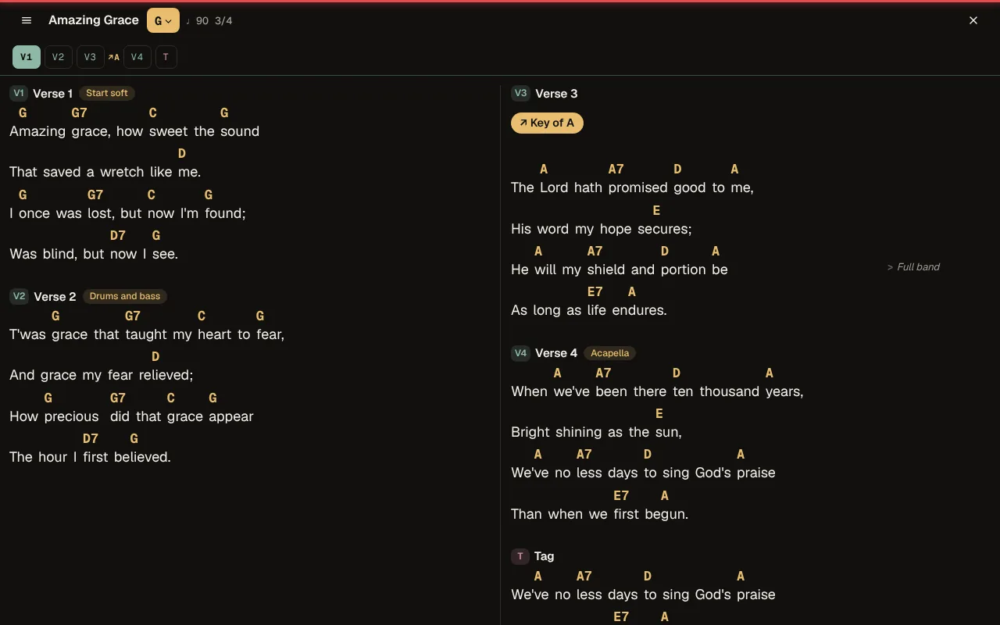
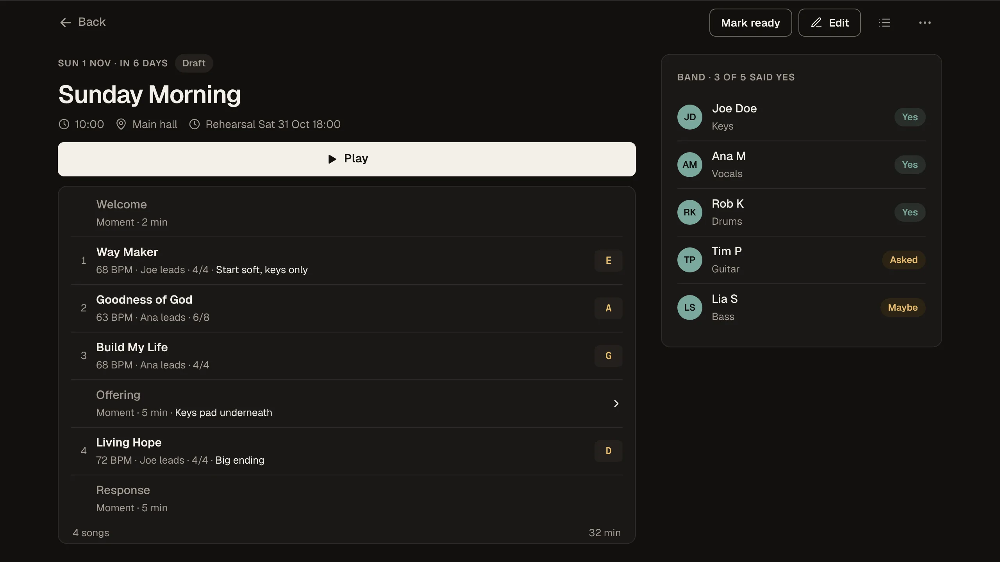
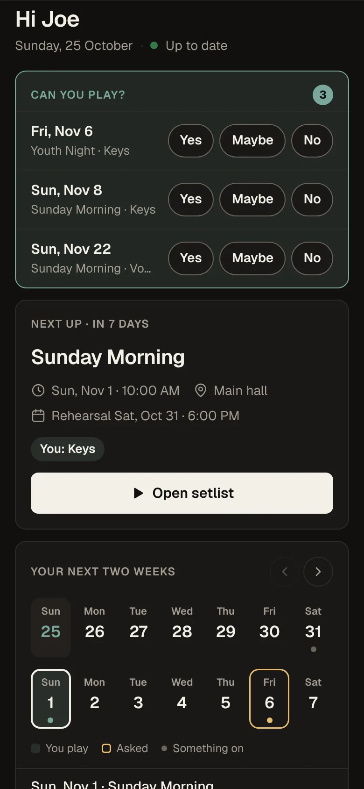
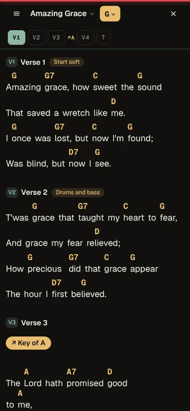

Chord charts, setlists and the band's schedule in one app for worship teams. Plan on Tuesday, play on Sunday, from the same charts on every phone, iPad and laptop.
Free during the beta. Free for good for teams of up to 5.

How a week goes.
Leaders plan the service, the band says who's in, and everyone plays from the same chart. A change on Tuesday is on every music stand by Sunday.
TuesdayBuild the setlist in minutes.
Pick songs from your church's library, set the key and who leads each one, and slot in the welcome and the offering. Mark it Ready and the whole band gets a notification.


WednesdayEveryone knows when they're playing.
Musicians answer Yes, Maybe or No right from Home, and see the next service, rehearsal time and place on one card. Leaders see who's in while they plan. No group chat to scroll back through.
SundayMade for the stage.
Big, clear charts with the band's cues where you need them. Transpose for the singer on the day, see key changes where they happen, and swipe to the next song. The chart still opens when the church Wi-Fi doesn't.

And the small things.
- Practice at home
- Outside the service the same setlist opens in practice mode, so the band can run through it on Saturday.
- Works without Wi-Fi
- Charts live on each device, so a weak signal in the sanctuary doesn't matter.
- Changes don't get lost
- Edit a setlist after it's marked Ready and the band sees exactly what changed, inside the setlist.
- Stand-ins without accounts
- Send a stand-in drummer a link to the set. It stops working a few hours after the service.
- Paper when you need it
- Print the set for the band or save it as a PDF, with the order on the first page.
- Your songs stay yours
- Songs are kept in a plain text format. Export the whole library whenever you like.
One price for the whole team.
Every person on the team gets every feature. No charge per musician.
| Plan | People | During the beta | After the beta |
|---|---|---|---|
| FreeA small band or a few friends | Up to 5 | $0 | $0, for good |
| BandA worship band, youth team or church plant | Up to 10 | $0 | $14.99 a month |
| ChurchOne service or several, each with its own band | Up to 30 | $0 | $24.99 a month |
Everything is free during the beta. Before paid plans start, every beta team hears the price and the date, and nothing is charged unless you say yes.
Prices in US dollars. Local taxes may apply once paid plans start.
Before you join.
What happens when I join?
You make a free account in a minute. If your church or band isn't on Setlists.md yet, tap Ask to start a church and tell us its name. We set it up and reply by email, usually within two days. Then you share one invite link with your team.
Does everyone in the band need to sign up?
Each person makes a free account from your invite link, and you approve who joins, so the library stays inside your team. Stand-ins can use a guest link with no account.
Do we need to install anything?
No app store needed. It runs in Safari or Chrome. Add it to your Home Screen to use it full screen and offline. See how to add it.
Can we bring our songs?
Yes. Paste a chord sheet with the chords over the words and it finds the verses and choruses for you. Your library starts empty, so you only keep songs your church is allowed to use.